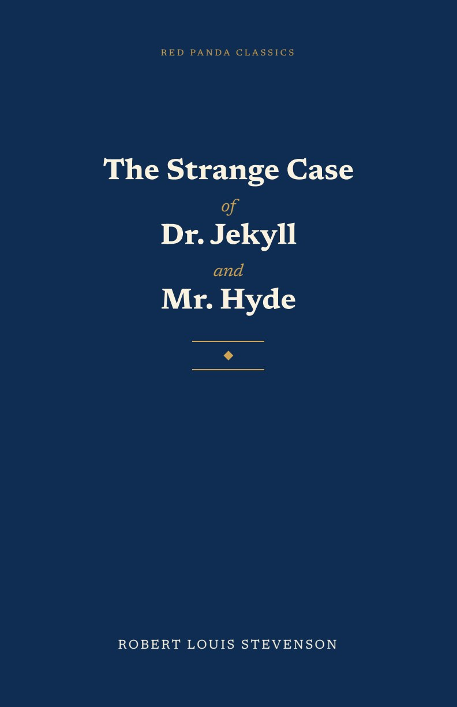

Your manuscript,
ready for the printer.
Upload a Word file in English or Hindi. Redworm lays out the pages, builds the cover and gives you files a printer can use.
Make your book →
Free while in preview. Below is a real book Redworm made.
- Import
- Proofread
- Pages
- Cover
- Download
working basics working, more coming

Made with Redworm
The Strange Case of Dr. Jekyll and Mr. Hyde
Robert Louis Stevenson · 98 pages · paperback and ebook
Found 10 chapters, the title and the author, in a Word file with no heading styles at all.
- Story of the Door
- Search for Mr. Hyde
- Dr. Jekyll Was Quite at Ease
- The Carew Murder Case
- Incident of the Letter
- Remarkable Incident of Dr. Lanyon
- Incident at the Window
- The Last Night
- Dr. Lanyon’s Narrative
- Henry Jekyll’s Full Statement of the Case
Set aside, not printed: the earlier ebook’s Imprint, Colophon and Uncopyright pages.
› What “ready for the printer” means
- Every font is included in the file
- Page size and the 3 mm trim edge are right on every page
- Colours are print colours (CMYK), with no screen colours
- Nothing is see-through, which printers can't handle
- Pictures are sharp enough to print (300 DPI)
- The file is marked as the PDF/X-1a print standard
How thick will my book be?
My Book
› Use my printer's numbers
Fill in weight + bulk, or pages per inch. Your printer can give you either. Leave empty to use the paper above.